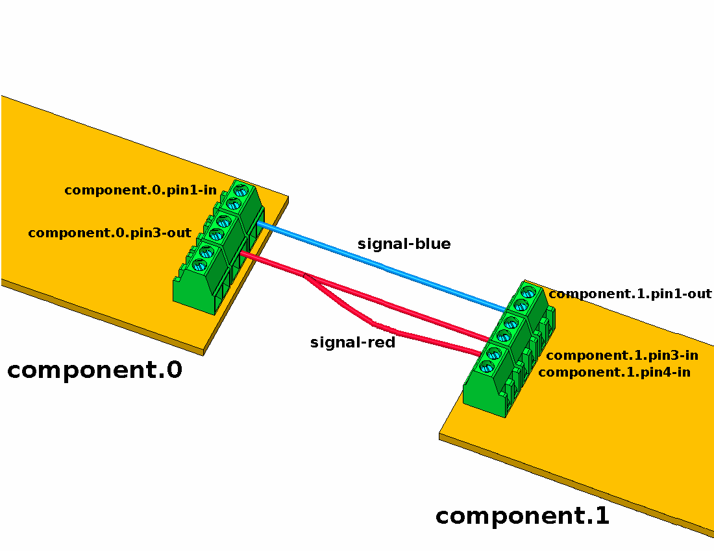
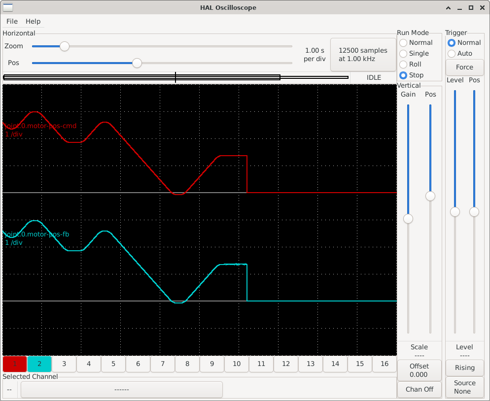

As noted in Section 3.6.2, a LinuxCNC configuration comprises several files, requiring at least one INI file and one HAL file. The following sections detail the configuration of both file types, using the mesa_7i96s_7i77_xy configuration as an example.
An .ini file is a plain text file used for configuring applications and programs. It has a simple structure consisting of sections and key-value pairs. The basic syntax of an .ini file is as follows:
Sections: Sections serve to organize keys and values. Each section begins with its name enclosed in square brackets, followed by zero or more key-value pairs belonging to that section. The syntax for a section is:
[section_name]
Keys and Values: Within each section, keys and their corresponding values can be defined. Keys are identifiers used to access associated values. The syntax for a key-value pair is:
key=value
Keys can contain letters and underscores (_). Values can be text strings, integers, or floating-point numbers.
Comments: Comments begin with a semicolon (;) or a hash symbol (#). For example:
Below are the different sections of the mesa_7i96s_7i77_xy.ini configuration file, with comments explaining the purpose of each parameter. Note that not all available parameters are specified in some sections. For a complete list of parameters and their documentation, consult the LinuxCNC user manual [lin23].
EMC Section: General configuration.
1[EMC] 2# General configuration 3 4# Machine name, usually displayed in the interface window. 5MACHINE=mesa_7i96s 6 7# Debug flags, 0 will not print debug messages. 8DEBUG=0 910# Configuration version, for LinuxCNC 2.9 it should be 1.1.11VERSION=1.1
DISPLAY Section: User interface configuration. The available options may depend on the specific user interface used. In this case, we are using the AXIS user interface.
14[DISPLAY]15# Graphic interface configuration1617# Type of graphic interface to use.18DISPLAY=axis1920# Coordinate system: RELATIVE or MACHINE.21POSITION_OFFSET=MACHINE2223# Coordinates to display: COMMANDED or ACTUAL.24POSITION_FEEDBACK=ACTUAL2526# Maximum "feed override". A "feed override" of 2 means27# 200% of the programmed "feed rate".28MAX_FEED_OVERRIDE=2.0000002930# Image to display on the splash screen.31INTRO_GRAPHIC=linuxcnc.gif3233# Maximum time in seconds for the splash screen.34INTRO_TIME=53536# Default directory for G-code programs.37PROGRAM_PREFIX=/home/gtec/linuxcnc/nc_files3839# Increments to move the robot with manual control.40INCREMENTS=5mm 1mm .5mm .1mm .05mm .01mm .005mm4142# The coordinate value to be displayed: COMMANDED or ACTUAL43POSITION_FEEDBACK=ACTUAL4445# Default linear velocity with manual control.46DEFAULT_LINEAR_VELOCITY=1.0000004748# Maximum allowed linear velocity with manual control.49MAX_LINEAR_VELOCITY=10.0000005051# Minimum allowed linear velocity with manual control.52MIN_LINEAR_VELOCITY=0.0000005354# Text editor to use when clicking File -> Edit.55EDITOR=mousepad5657# Geometry of the 3D view in the preview window.58GEOMETRY=XY5960# Refresh time in milliseconds.61CYCLE_TIME=1006263# File to open when starting LinuxCNC (optional).64OPEN_FILE=""
TASK Section: LinuxCNC task controller configuration. The task controller is responsible for communicating with the user interface, the motion planner, and the G-code interpreter. Currently, milltask is the only task controller available. For more information, consult the LinuxCNC user manual [lin23] and the milltask man page, also available at http://linuxcnc.org/docs/devel/html/man/man1/milltask.1.html.
67[TASK]68# Task controller configuration6970# Task controller module, milltask.71TASK=milltask7273# Execution period of milltask.74CYCLE_TIME=0.010
77[RS274NGC]78# RS274NGC interpreter configuration7980# Interpreter variable file.81PARAMETER_FILE=linuxcnc.var8283# Startup codes for the interpreter.84RS274NGC_STARTUP_CODE=G21 G40 G90 G94 G97 G64 P0.025
EMCMOT Section: Motion controller configuration. The EMCMOT and SERVO_PERIOD parameters are not directly used by LinuxCNC but are used to configure the motion control module in the HAL file (see Section 3.8.2).
87[EMCMOT] 88# Motion controller configuration 89 90# Motion controller module, motmod. 91# Not used by LinuxCNC directly, used in the HAL file. 92EMCMOT=motmod 93 94# Number of seconds to wait for the motion module to 95# confirm receipt of messages from the task module. 96COMM_TIMEOUT=1.0 97 98# "servo" thread period 99# Not used by LinuxCNC directly, used in the HAL file.100SERVO_PERIOD=1000000
HAL Section: HAL configuration.
103[HAL]104# Hardware Abstraction Layer (HAL) configuration105106# Add the HAL user interface pins.107HALUI=halui108109# HAL file to execute when starting LinuxCNC.110# Can be specified multiple times.111HALFILE=mesa_7i96s_7i77_xy.hal112113# HAL file to execute after loading the graphical interface.114POSTGUI_HALFILE=postgui.hal115116# HAL file to execute when closing LinuxCNC.117SHUTDOWN=shutdown.hal
HALUI Section: HALUI (HAL-based user interface) configuration. The only available option is MDI_COMMAND, which allows MDI commands to be executed via HAL signals. In our case, this section is left empty.
120[HALUI]121# HAL User Interface122123# MDI Command. Can be specified multiple times.124# To execute it use the halui.mdi-command-NN pin,125# where NN is the command number.126# MDI_COMMAND = G1 X0 Y0 Z0
KINS Section: Kinematics configuration.
129[KINS]130# Kinematics131132# Number of joints (motors).133JOINTS=2134135# Kinematics module136# Not used by LinuxCNC directly, used in the HAL file.137KINEMATICS=trivkins coordinates=XY
APPLICATIONS Section: LinuxCNC allows applications to be launched at startup. These applications must be specified within the APPLICATIONS section using the APP option, which can be used multiple times. Applications will be launched either at the beginning, before the graphical interface starts, or after a delay specified by the DELAY option.
140[APPLICATIONS]141# Additional applications142143# Application to execute. Can be specified multiple times.144APP=halscope 50000
TRAJ Section: Trajectory planner configuration.
147[TRAJ]148# Trajectory planner configuration149150# Controlled axes. Possible values: X, Y, Z, A, B, C, U, V, W.151# An axis can be specified more than once, e.g., XXYZ.152COORDINATES=XY153154# Units for linear axes.155LINEAR_UNITS=mm156157# Units for rotary axes.158ANGULAR_UNITS=degree159160# Maximum linear velocity, in units per second.161MAX_LINEAR_VELOCITY=12.00162163# Maximum linear acceleration, in units per second^2.164MAX_LINEAR_ACCELERATION=20.0
EMCIO Section: Input/output controller configuration. This controls input/output tasks such as coolant, tool changes, and emergency stops.
167[EMCIO]168# Input/Output (I/O) controller configuration169170# Input/output controller module.171EMCIO=io172173# Period at which EMCIO will be executed.174CYCLE_TIME=0.100
AXIS_<i> Section: Configuration for axis <i>. Possible values for <i> include X, Y, Z, A, B, C, U, V, and W. An example of the X-axis configuration is provided below; the Y-axis configuration is similar.
Important
When configuring the robot’s limits (MIN_LIMIT and MAX_LIMIT parameters), it is advisable to leave some margin beyond the desired workspace. If the robot is commanded to position itself at one of the limits, it can easily exceed that limit slightly. For example, if you want your robot to operate on the X-axis between X = 0 and X = 200, you could configure MIN_LIMIT=-5 and MAX_LIMIT=205.
177[AXIS_X]178# X axis configuration179180# Maximum axis velocity, in units per second.181MAX_VELOCITY=12.0182183# Maximum axis acceleration, in units per second^2.184MAX_ACCELERATION=20.0185186# Minimum limit for the axis, in machine units.187MIN_LIMIT=-5188189# Maximum limit for the axis, in machine units.190MAX_LIMIT=205.0
JOINT_<n> Section: Configuration for joint (motor) <n>, where <n> is the joint number, ranging from 0 to (<num_joints>\(-\) 1). The value of <num_joints> is set in the JOINTS option of the KINS section.
For machines with Cartesian geometries, such as gantry robots, LinuxCNC includes the trivkins kinematics module. With this module, by default, there is a 1:1 correspondence between the axis coordinate letter and the joint number, i.e., JOINT_0 = X, JOINT_1 = Y, …, JOINT_8 = W.
The trivkins module accepts the coordinates parameter to specify the association of axis coordinate letters with the joint number. For example, with the parameter coordinates=XZ, JOINT_0 will be assigned to X and JOINT_1 to Z. In this parameter, the same axis letter can be specified multiple times, allowing multiple joints to be assigned to the same axis. In this case, it is also necessary to use the kinstype=B parameter. For instance, with the parameters coordinates=XX and kinstype=B, both JOINT_0 and JOINT_1 will be assigned to X.
Both the joint and axis configurations include MAX_VELOCITY, MAX_ACCELERATION, MIN_LIMIT, and MAX_LIMIT parameters. When the robot is not homed, LinuxCNC uses the parameters from the joint sections; however, once the robot is homed, it uses the parameters from the axis sections.
The following code shows the configuration of joint 1 (X-axis), which corresponds to the stepper motor. The parameters specified below the comment “Custom configurations for the HAL file” are not directly used by LinuxCNC; they are used to configure the motor parameters in the HAL file (see Section 3.8.2).
193[JOINT_0]194# Configuration of the first linear motor (X axis)195196# Motor type, LINEAR or ANGULAR.197TYPE=LINEAR198199# Maximum tracking error, in machine units.200FERROR=1.0201202# Maximum tracking error at slow speeds.203MIN_FERROR=0.2204205# Maximum motor velocity, in units per second.206MAX_VELOCITY=12.0207208# Maximum motor acceleration, in units per second^2.209MAX_ACCELERATION=20.0210211# Minimum motor limit, in machine units.212MIN_LIMIT=-5213214# Maximum motor limit, in machine units.215MAX_LIMIT=205.0216217# Position to which the joint will move upon completion of218# the homing process.219HOME=0220221# Used to define the homing order.222HOME_SEQUENCE=0223224# Home switch position, in machine units.225HOME_OFFSET=-10226227# Initial homing search velocity, in units per second.228HOME_SEARCH_VEL=-1229230# Final homing search velocity, in units per second.231HOME_LATCH_VEL=-0.25232233# Final homing velocity, in units per second.234HOME_FINAL_VEL=2235236# Ignore limit switches during homing.237# = YES if the same switch is used for limits and homing.238HOME_IGNORE_LIMITS=YES239240# The switch is shared with another joint.241HOME_IS_SHARED=0242243# Use the encoder's index pulse for homing.244HOME_USE_INDEX=NO245246# ---------------------------------------------------247# Custom configurations for the HAL file.248# ---------------------------------------------------249250# *** Step generation configuration ***251252# Minimum duration of the stable direction signal before253# starting a step, in nanoseconds.254DIRSETUP=10000255256# Minimum duration of the direction signal after finishing257# a step, in nanoseconds.258DIRHOLD=10000259260# Duration of the step signal, in nanoseconds.261STEPLEN=2500262263# Minimum interval between step signals, in nanoseconds.264STEPSPACE=2500265266# Step scale. position = steps / STEP_SCALE.267# To move the axis 1mm/rev with a 1.8° step motor and 1/32268# step mode, STEP_SCALE = steps / position = (32*360/1.8)/1 = 6400269STEP_SCALE=6400270271# Maximum velocity, in position units per second.272STEPGEN_MAXVEL=17273274# Maximum acceleration, in position units per second^2.275STEPGEN_MAXACCEL=62.5276277# Note: It is recommended that STEPGEN_MAXVEL and STEPGEN_MAXACCEL be278# between 1% and 25% larger than MAX_VELOCITY and MAX_ACCELERATION.279280281# *** Encoder configuration ***282283# Encoder scale. position = counts / ENCODER_SCALE.284# To get 1mm/rev with a 1000 ppr encoder (4000 cpr),285# ENCODER_SCALE = counts / position = 4000 / 1 = 4000286ENCODER_SCALE=4000.0287288289# *** PID controller configuration ***290291P=50.0292I=20.0293D=0.0294FF0=0.0295FF1=1.0296FF2=0.025297BIAS=0.0298DEADBAND=0.0299MAX_OUTPUT=0.0
The following code shows the configuration of joint 2 (Y-axis), which corresponds to the brushless motor. As before, the parameters specified below the comment “Custom configurations for the HAL file” are not directly used by LinuxCNC; they are used to configure the motor parameters in the HAL file (see Section 3.8.2). These parameters differ from the previous ones because now a brushless motor is used.
318[JOINT_1]319# Configuration of the second linear motor (Y axis)320321# Motor type, LINEAR or ANGULAR.322TYPE=LINEAR323324# Maximum tracking error, in machine units.325FERROR=1326327# Maximum tracking error at slow speeds.328MIN_FERROR=0.2329330# Maximum motor velocity, in units per second.331MAX_VELOCITY=12.0332333# Maximum motor acceleration, in units per second^2.334MAX_ACCELERATION=20.0335336# Minimum motor limit, in machine units.337MIN_LIMIT=-5338339# Maximum motor limit, in machine units.340MAX_LIMIT=205.0341342# Position to which the joint will move upon completion of343# the homing process.344HOME=0345346# Used to define the homing order.347HOME_SEQUENCE=1348349# Home switch position, in machine units.350HOME_OFFSET=-10351352# Initial homing search velocity, in units per second.353HOME_SEARCH_VEL=-1354355# Final homing search velocity, in units per second.356HOME_LATCH_VEL=-0.25357358# Final homing velocity, in units per second.359HOME_FINAL_VEL=2360361# Ignore limit switches during homing.362# = YES if the same switch is used for limits and homing.363HOME_IGNORE_LIMITS=YES364365# The switch is shared with another joint.366HOME_IS_SHARED=0367368# Use the encoder's index pulse for homing.369HOME_USE_INDEX=NO370371# ---------------------------------------------------372# Custom configurations for the HAL file.373# ---------------------------------------------------374375# *** Analog output configuration for +-10V ***376377# Maximum velocity in units per second.378ANALOGOUT_MAXLIM=50379380# Minimum velocity in units per second.381ANALOGOUT_MINLIM=-50382383# Analog output scale. Vout = 10 * velocity / ANALOGOUT_SCALE.384# Maximum velocity in units per second that the motor can reach.385# For a max velocity of X rpm, with Y ppr encoder (4*Y cpr),386# ANALOGOUT_SCALE = X / 60 * ENCODER_SCALE / (4*Y).387# For 3000 rpm, ANALOGOUT_SCALE = 3000 / 60 * 2048 / 2048 = 50388ANALOGOUT_SCALE=50389390391# *** Encoder configuration ***392393# Encoder scale. position = counts / ENCODER_SCALE.394# To get 1mm/rev with a 512 ppr encoder (2048 cpr),395# ENCODER_SCALE = counts / position = 2048 / 1 = 2048396ENCODER_SCALE=2048.0397398399# *** PID controller configuration ***400401P=20.0402I=10.0403D=0.0404FF0=0.0405FF1=1.0406FF2=0.01407BIAS=0.0408DEADBAND=0.0409MAX_OUTPUT=0.0
HAL is a fundamental component of LinuxCNC, serving as an interface between the machine’s software and hardware. It provides the infrastructure for communication among the system’s numerous software and hardware components. The HAL layer is composed of components that:
Are interconnected, processing incoming data and providing outputs to other components (e.g., the motion planning algorithm instructs the motors on their movement).
Possess the ability to communicate with hardware.
Always run periodically in one of the following ways:
As real-time components, either with an execution frequency of a few microseconds (e.g., to advance a stepper motor or read an encoder) or with a frequency less than one millisecond (e.g., to adjust the planning of subsequent movements to complete a G-code instruction).
As non-real-time user-space components, which can be interrupted or delayed if the rest of the system is busy or overloaded.
Pins and Signals: HAL is based on the same principles used to design electrical circuits and hardware systems, employing “pins” and “signals” to represent the flow of data between HAL modules or components. In summary:
Pins can carry boolean, float, and signed or unsigned integer values.
Pins have a direction: input (IN), output (OUT), or input/output (I/O).
A signal identifies a connection between pins.
Fig. 26 from the LinuxCNC documentation [lin23] illustrates the concepts of components, pins, and signals in HAL. In the figure, pin pin3-out of component.0 connects to pins pin3-in and pin4-in of component.1 (via the signal-red signal), and pin pin1-out of component.1 connects to pin pin1-in of component.0 (via the signalblue signal).

Fig. 26 HAL Concept — Connection as electrical circuits. Source: LinuxCNC documentation [lin23].¶
Parameters: HAL components can have parameters, which are input or output settings not connected to any other component. There are two types of parameters:
Input parameters: Values that the user can adjust and that remain fixed once configured.
Output parameters: Values that cannot be adjusted by the user. They allow for internal signals to be monitored.
Functions: Each HAL component has one or more functions that must be executed to perform the component’s task. For these functions to be executed, they must be added to a thread.
Threads: Threads enable HAL component functions to be executed at specific time intervals. When a thread is created, the time interval at which its assigned functions will be executed is specified. Subsequently, the functions of the HAL components can be added to the thread to be executed in order at the thread’s defined time interval.
HAL does not interact directly with the user. LinuxCNC provides various interfaces to configure or interact with HAL:
From .hal files.
From the command line using the halcmd command.
From Python scripts.
From C/C++ programs.
Configuration or interaction with HAL using any of these interfaces is performed through commands. The complete list of commands is detailed in the halcmd man page, also available at http://linuxcnc.org/docs/html/man/man1/halcmd.1.html. The most relevant commands are:
Note
Generally, each command must be specified on a single line. If a command needs to be split across multiple lines, a backslash (\) character can be used to indicate that the line continues to the next. The backslash must be the last character before the new line.
loadrt: Loads a HAL real-time component into the system. The basic syntax of the loadrt command is:
loadrt <component> <options>
where <component> is the name of the component and <options> are the component options. For example:
loadrtmux4count=1
addf: Adds a function to a real-time thread. The syntax of the addf command is:
addf <function> <thread>
where <function> is the name of the function and <thread> is the thread to which it will be added. For example:
addfmux4.0servo-thread
loadusr: Loads a non-real-time HAL component into the system. Non-real-time components are separate processes that can optionally communicate with other HAL components via pins and parameters. Real-time components cannot be loaded into non-real-time space. The syntax of the loadusr command is:
loadusr [<flags>] <command>
where <command> is the program command to be executed and <flags> can be one or more of the following options:
-i: Ignore the program’s return value (with -w).
-w: Wait for the program to finish.
-W: Wait for the component to be ready. It is assumed that the component will have the same name as the first argument of the command.
-Wn``<name>: Wait for the component to be ready and assign it the name <name>. This is only applicable if the component has the -n option to assign a name.
For example:
loadusr-Wnspindlegs2_vfd-nspindle
net: Creates a connection between a signal and one or more pins. The syntax is as follows:
net <signal> <pin>
where <signal> is the name of the signal and <pin> is the name of a pin. If the signal does not exist, a new signal is created. The command also allows the use of the words <=, =>, and <=>, separated by a space from the pin names, to indicate the direction of the signals between pins. These words are ignored by the command and merely serve to facilitate readability.
The following rules must be met to connect a pin to a signal:
An input (IN) pin can always be connected to a signal.
An input/output (I/O) pin can be connected unless there is an output (OUT) pin on the signal.
An output (OUT) pin can be connected only if there are no other output (OUT) or input/output (I/O) pins on the signal.
The same signal name can be used in multiple net commands to connect additional pins, provided the above rules are respected.
Examples:
nethome-xjoint.0.home-sw-in<=parport.0.pin-11-in
where home-x is the signal name, joint.0.home-sw-in is an input (IN) pin, <= is the optional direction arrow (ignored by the command), and parport.0.pin-11-in is an output (OUT) pin.
This example can also be equivalently defined in HAL by two net commands:
As seen in this example, although the second pin’s name has the -in suffix, HAL treats it as an output pin. Therefore, when configuring pin connections in HAL, always refer to how the pin is configured in HAL, not just its name.
setp: Sets the value of a pin or parameter. Valid values depend on the pin or parameter’s data type. The syntax of this command is:
setp <name> <value>
where <name> is the name of the pin or parameter and <value> is the value to which it is to be set. The command will fail if <name> does not exist as a pin or parameter, if it is a read-only parameter, if it is an output (OUT) pin, if it is a pin that is already connected to a signal, or if <value> is not a valid value for the pin or parameter’s data type.
sets: Sets the value of a signal. The syntax is:
sets <signal> <value>
where <signal> is the name of the signal and <value> is the value to which it is to be set. The command will fail if <signal> does not exist as a signal, if the signal is already connected to an output (OUT) pin, or if <value> is not a valid value for the signal’s data type.
unlinkp: Unlinks a pin from its connected signal. The syntax of the command is:
unlinkp<name>
where <name> is the name of the pin. If the pin does not have a connected signal, nothing happens. The command will fail if <name> does not exist as a pin.
A .hal file is a plain text file containing HAL commands. Comments can be included by starting lines with the hash symbol (#). Options from the .ini file can be accessed with the syntax [<section>]<option>, where [<section>] is the section name in square brackets and <option> is the corresponding option name within that section.
As noted in Section 3.6.2, a LinuxCNC configuration includes at least one .ini file and one .hal file. Below is the mesa_7i96s_7i77_xy.hal configuration file, corresponding to the mesa_7i96s_7i77_xy.ini file detailed in Section 3.8.1. Unlike the .ini format, the .hal format does not have a formal section syntax; however, for clarity, the file is presented below divided into different parts.
Load modules, add functions to threads, and other initial configurations:
1# Load kinematics module 2loadrt[KINS]KINEMATICS 3 4# Load motion controller module 5# The "servo_period_nsec" option creates the "servo-thread" thread 6loadrt[EMCMOT]EMCMOTservo_period_nsec=[EMCMOT]SERVO_PERIODnum_joints=[KINS]JOINTS 7 8# Load MESA board controller 9loadrthostmot21011# Load MESA low-level Ethernet Anything IO boards controller12# (Mesa Electronics Ethernet Anything IO boards)13loadrthm2_ethboard_ip="10.68.33.122"config="num_encoders=2 num_pwmgens=0 num_stepgens=1"1415# Load ladder language module16loadrtclassicladder_rt1718# Load pid module and create a controller for each axis19loadrtpidnames=pid.x,pid.y2021# Load estop_latch module to handle emergency stop22loadrtestop_latch2324# Load oneshot module (pulse generator)25loadrtoneshot2627# Load logic module and define a 5-input OR function28loadrtlogicnames=logic.faultpersonality=0x2052930# Configure the watchdog timeout for the MESA 7I96S board31setphm2_7i96s.0.watchdog.timeout_ns50000003233# Configure dpll (digital phase locked loop) of the hostmot2 module34setphm2_7i96s.0.dpll.01.timer-us-10035setphm2_7i96s.0.stepgen.timer-number136setphm2_7i96s.0.encoder.timer-number13738# Configure pulse parameters of the oneshot module39setponeshot.0.width0.14041# Add functions to the servo thread42addfmotion-command-handlerservo-thread43addfmotion-controllerservo-thread44addfpid.x.do-pid-calcsservo-thread45addfpid.y.do-pid-calcsservo-thread46addfhm2_7i96s.0.readservo-thread47addfhm2_7i96s.0.writeservo-thread48addfclassicladder.0.refreshservo-thread49addfestop-latch.0servo-thread50addfoneshot.0servo-thread51addflogic.faultservo-thread5253# Load classicladder project54loadusrclassicladdermyladder.clp--nogui
123# MDI Command. Can be specified multiple times.124# To execute it use the halui.mdi-command-NN pin,125# where NN is the command number.126# MDI_COMMAND = G1 X0 Y0 Z0127128129[KINS]130# Kinematics131132# Number of joints (motors).133JOINTS=2134135# Kinematics module136# Not used by LinuxCNC directly, used in the HAL file.137KINEMATICS=trivkinscoordinates=XY138139140[APPLICATIONS]141# Additional applications142143# Application to execute. Can be specified multiple times.144APP=halscope50000145146147[TRAJ]148# Trajectory planner configuration149150# Controlled axes. Possible values: X, Y, Z, A, B, C, U, V, W.151# An axis can be specified more than once, e.g., XXYZ.152COORDINATES=XY153154# Units for linear axes.155LINEAR_UNITS=mm156157# Units for rotary axes.158ANGULAR_UNITS=degree159160# Maximum linear velocity, in units per second.161MAX_LINEAR_VELOCITY=12.00162163# Maximum linear acceleration, in units per second^2.164MAX_LINEAR_ACCELERATION=20.0165166167[EMCIO]168# Input/Output (I/O) controller configuration169170# Input/output controller module.171EMCIO=io172173# Period at which EMCIO will be executed.174CYCLE_TIME=0.100175176177[AXIS_X]178# X axis configuration
Other configurations:
182#***************183# Other signals184#***************185186# --- Igus controller alert and error signals ---187188netX-alert<=hm2_7i96s.0.7i77.0.0.input-08189netX-error<=hm2_7i96s.0.7i77.0.0.input-09190191netY-alert<=hm2_7i96s.0.7i77.0.0.input-01192netY-error<=hm2_7i96s.0.7i77.0.0.input-02193194195# --- External emergency stop ---196197netremote-estop<=hm2_7i96s.0.7i77.0.0.input-13198199200# --- Fault signal (logic.fault) ---201# The fault signal will be activated if an Igus controller202# emits an error or alert signal or the user presses the203# emergency stop button (ESTOP).204205netX-alert=>logic.fault.in-00206netX-error=>logic.fault.in-01207208netY-alert=>logic.fault.in-02209netY-error=>logic.fault.in-03210211netremote-estop=>logic.fault.in-04212213214# --- Emergency stop (ESTOP) ---215216netuser-enable<=iocontrol.0.user-enable-out217netuser-enable=>estop-latch.0.ok-in218219netuser-request-enable<=iocontrol.0.user-request-enable220netuser-request-enable=>estop-latch.0.reset221222netfault<=logic.fault.or223netfault=>estop-latch.0.fault-in224225netemc-enable<=estop-latch.0.ok-out226netemc-enable=>iocontrol.0.emc-enable-in227228229# --- Enable motors ---230231netmachine-on<=halui.machine.is-on232netmachine-on=>hm2_7i96s.0.7i77.0.0.output-00233234235# --- Pulse to start brushless motor rotation program ---236237netbrushless-ready<=hm2_7i96s.0.7i77.0.0.input-00238netbrushless-ready=>oneshot.0.in239240netstart-brushless<=oneshot.0.out241netstart-brushless=>hm2_7i96s.0.7i77.0.0.output-01242243244# --- LED indicators panel ---245246netmachine-estop<=halui.estop.is-activated247248netmachine-estop=>classicladder.0.in-00249netremote-estop=>classicladder.0.in-01250netmachine-on=>classicladder.0.in-02251252netX-error=>classicladder.0.in-03253netX-alert=>classicladder.0.in-08254255netY-error=>classicladder.0.in-05256netY-alert=>classicladder.0.in-10257258netled-red<=classicladder.0.out-00259netled-red=>hm2_7i96s.0.7i77.0.0.output-02260261netled-yellow<=classicladder.0.out-01262netled-yellow=>hm2_7i96s.0.7i77.0.0.output-03263264netled-green<=classicladder.0.out-02265netled-green=>hm2_7i96s.0.7i77.0.0.output-04
Several HAL tools are available for real-time visualization and diagnosis of pin states. The most notable ones are described below; for a complete list of tools, consult the LinuxCNC user manual [lin23].
halcmd is a command-line tool for interacting with HAL. When halcmd is executed, the following command line will appear:
halcmd:
This prompt allows you to enter and execute HAL commands. Besides the commands detailed previously in Section 3.8.2, other commands such as show, list, or save can be very useful. These commands enable printing various elements defined in HAL, such as pins, parameters, threads, etc. The complete list of commands is detailed in the halcmd man page, also available at http://linuxcnc.org/docs/html/man/man1/halcmd.1.html.
halshow is a graphical tool that allows viewing and monitoring HAL components such as pins, parameters, signals, and functions. This tool is shown in Figures 27 and 28. The tool has the following main elements:
A tree view displaying HAL pins, parameters, signals, functions, etc. This view is located on the left side of the window, as seen in Figures 27 and 28.
A text input field for executing HAL commands, located at the bottom, as shown in Figures 27 and 28.
A “SHOW” tab where information about the selected element in the tree view is displayed, as shown in Fig. 27.
A “WATCH” tab where you can monitor and set values of HAL pins or parameters. Elements can be added here by clicking on them in the tree view, as shown in Fig. 28.
A “SETTINGS” tab with various options such as refresh interval or display format of parameters.
The File menu allows saving monitored elements from the “WATCH” tab to a file, as well as loading an existing list of elements to monitor from a file.
You can open the Halshow tool from the AXIS graphical interface by clicking on Machine ‣ Show Hal Configuration.
halscope is a graphical tool that provides an oscilloscope for HAL. It allows capturing and displaying the values of pins, signals, and parameters over a period of time. This tool is shown in Fig. 29. The File menu allows saving the current configuration or opening a previously saved configuration. When halscope is closed, the configuration is automatically saved to the autosave.halscope file.

Fig. 29 Halscope tool showing the values of joint.0.motor-pos-cmd (motor position commanded by LinuxCNC) and joint.0.motor-pos-fb (motor position read from the encoder) over time.¶
You can open the Halscope tool from the AXIS graphical interface by clicking on Machine ‣ Hal scope.
LinuxCNC includes the ClassicLadder component, a free implementation of a ladder interpreter published under the LGPL.
Ladder logic, or the ladder programming language, is a method for drawing electrical logic diagrams. Originally conceived to describe control systems using relays, this approach has become a widely used graphical language for programming PLC devices. It derives its name from the fact that programs in this language resemble ladders, with two vertical rails and a series of horizontal rungs between them.
To use ClassicLadder, you must load the classicladder_rt real-time module in HAL and add the classicladder.0.refresh function to the servo-thread thread using the following commands:
Once this is done, you can open the ClassicLadder graphical interface with the system command classicladder, or from the AXIS interface by clicking on File ‣ Ladder Editor…. The ClassicLadder graphical interface allows you to create ladder logic programs, as well as view the logical status of the different program components. This interface is composed of several windows, as shown in Fig. 30.
In our testbed setup, ladder logic has been used to program the operation of the LED indicator panel. The program created with ClassicLadder has been saved in the myladder.clp file. To use it in LinuxCNC, it can be loaded with the following HAL command:
{kind=link}
{kind=link}